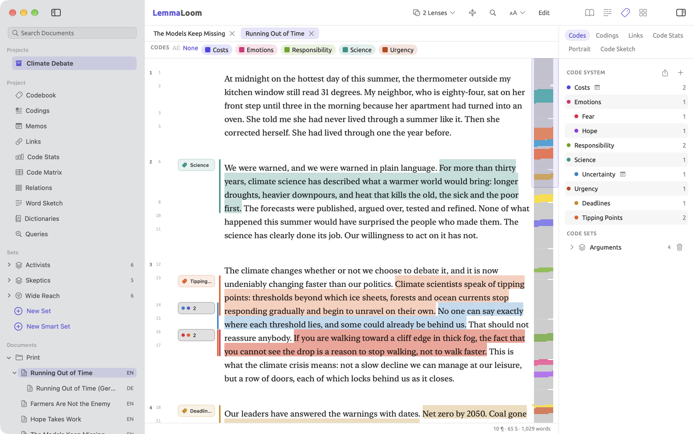

LemmaLoom
Grammar-aware Qualitative Data Analysis
LemmaLoom is a macOS application for qualitative and grammar analysis of text. Code passages just like you would in any other QDA-style application, then interrogate those codings against the grammar used throughout your documents.
Available for macOS 26.6 or later with support for English, German, and Chinese

What is LemmaLoom?
LemmaLoom works with essays, opinion pieces, news articles, surveys, interviews, works of literature, and more. Import plain text files, PDFs, web articles, and audio or video recordings. Recordings are transcribed into text, and their speakers are coded for you automatically.
Qualitative coding
Label passages with codes that help answer your questions, and add memos, links, and bookmarks as you read. Auto-code with dictionaries, queries, and analyzers, and exchange projects with other software through REFI-QDA.
Linguistic analysis
LemmaLoom identifies the dictionary form, part of speech, and function of every word. Lenses show grammatical patterns in your texts, and word sketches sort the words that neighbor other words by grammatical relation.
Mixed methods
Combine qualitative coding with grammar analysis. Query codes, attributes, and grammar together, measure how often patterns occur, compare groups of documents, and test their differences for statistical significance.
In English, German, and Chinese
LemmaLoom provides grammar analysis for English, German, and Chinese documents. The interface and user guide are available in English, German, and Simplified Chinese. Read the guide on the web or as a PDF.
-
English
-
Deutsch
-
简体中文
Contact
For questions, bug reports, and feature requests, email support@lemmaloom.app.